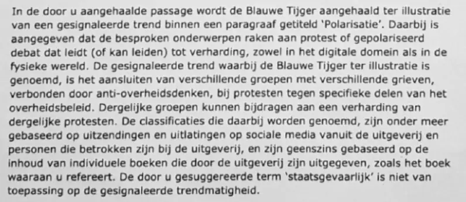

Preuve · Lettre
Ministre de la Justice à Giltay, 12 janvier 2021
L’essai cite cette lettre sur deux points. Les deux passages figurent ci-dessous, chacun avec son propre lien.
Non fondé sur le livre
« Les classifications mentionnées à cet égard sont notamment fondées sur des émissions et des déclarations sur les réseaux sociaux émanant de la maison d’édition et de personnes liées à la maison d’édition, et ne sont en aucune manière fondées sur le contenu d’ouvrages individuels publiés par la maison d’édition, comme le livre auquel vous faites référence. » Page 1 de la réponse, page 2 du PDF, troisième paragraphe. Le néerlandais « geenszins » est rendu ici par « en aucune manière », la formule qu’emploie aussi l’essai. Traduit du néerlandais ; le texte original figure ci-dessous.
“De classificaties die daarbij worden genoemd, zijn onder meer gebaseerd op uitzendingen en uitlatingen op sociale media vanuit de uitgeverij en personen die betrokken zijn bij de uitgeverij, en zijn geenszins gebaseerd op de inhoud van individuele boeken die door de uitgeverij zijn uitgegeven, zoals het boek waaraan u refereert.” Texte original
« Dangereux pour l’État » ne s’applique pas
« Le terme “dangereux pour l’État” que vous suggérez ne s’applique pas à la tendance constatée. » La dernière phrase de ce même paragraphe. Giltay avait lui-même employé le terme : dans sa lettre au NCTV, il écrivait qu’il n’avait jamais su que son éditeur était dangereux pour l’État. Traduit du néerlandais ; le texte original figure ci-dessous.
“De door u gesuggereerde term ‘staatsgevaarlijk’ is niet van toepassing op de gesignaleerde trendmatigheid.” Texte original

Pourquoi ce document compte
Dans cette lettre du 12 janvier 2021, le ministre de la Justice et de la Sécurité confirme que le passage consacré à la maison d’édition De Blauwe Tijger dans la 53e évaluation de la menace terroriste aux Pays-Bas (Dreigingsbeeld Terrorisme Nederland 53, DTN53) n’est pas fondé sur le livre de Giltay. Le 23 novembre 2020, Giltay avait demandé au Coordinateur national pour la sécurité et la lutte contre le terrorisme (NCTV) si son livre relevait lui aussi de la « propagande antigouvernementale », des « fausses informations » ou des « théories du complot », et, si oui, quels passages étaient visés, et à quelles pages.
La réponse ne dit pas non en toutes lettres, mais elle y équivaut : les classifications ne reposent en aucune manière sur le contenu d’ouvrages individuels de la maison d’édition, le sien compris, et la lettre ne cite ni passages ni numéros de page. Le terme « dangereux pour l’État », que Giltay avait lui-même avancé, ne s’applique pas non plus, selon la lettre, à « la tendance constatée ».
L’essai oppose cette lettre au ministère de la Défense, qui, en 2018, a décrit le livre comme un ouvrage où faits et fiction se mêlent.
Provenance
- Document
- Réponse au nom du ministre de la Justice et de la Sécurité
- Expéditeur
- Coordinateur national pour la sécurité et la lutte contre le terrorisme (NCTV), ministère de la Justice et de la Sécurité, La Haye
- Destinataire
- Edwin F. Giltay, La Haye
- Date
- 12 janvier 2021
- Référence
- 3175305
- Objet
- « Vraag Dreigingsbeeld Terrorisme Nederland 53 » (question sur la 53e évaluation de la menace terroriste aux Pays-Bas)
- Références
- Lettre de Giltay du 23 novembre 2020 au NCTV, reproduite en page 1 de ce PDF
- Signé
- Pour le ministre, par H.P. Schreinemachers, directeur de la Gestion de crise du NCTV
- Délégation de signature
- La lettre vaut lettre du ministre de la Justice et de la Sécurité, Ferdinand Grapperhaus, qui en porte la responsabilité. La citation dans la section des voix lui est donc attribuée.
- Langue
- Néerlandais
- Voir aussi
- Novini, Defensie flatert voort, 25 août 2018
Cité dans :
- l’essai « L’interdiction tombée, le livre debout » dans les chapitres (2) « Le gouvernement se contredit », (7) « Jamais de réponse sur le fond » et (11) « Mettre fin au silence pour Srebrenica »
- la section des voix
- la biographie de l’auteur.
Document : https://
Dernière modification le 13 septembre 2026, consulté le 3 octobre 2026.

Cette page est une fiche de preuve du livre Le Général de dissimulation d’Edwin Giltay et du site web qui l’accompagne.